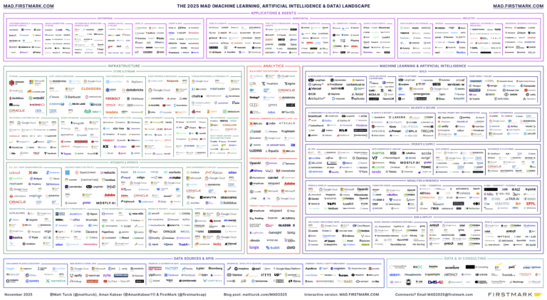

AI 시대의
데이터 활용과
행정조직 대응
예측과 설명의 차이를 분명히 하고, 막연한 낙관론과 비관론을 넘어, 공공조직이 실제로 준비해야 할 역량과 실행 원칙을 정리한 발표자료.
발표의 초점
- AI 시대에 데이터는 어떻게 활용되어야 하는가
- 예측과 설명은 왜 다른 분석 과제인가
- 막연한 낙관론과 비관론은 왜 모두 위험한가
- 행정조직은 어떤 준비와 진단이 필요한가
AI·데이터 생태계는 이미 거대한 층위 구조를 이룬다
응용과 에이전트, 인프라, 분석, 머신러닝·AI, 데이터 소스와 API, 컨설팅까지 전체 지형을 한 번에 보여주는 참고 그림.

참고: Matt Turck, FirstMark, 2025 MAD Landscape
오늘의 질문은 네 가지
이번 발표는 기술 소개보다 정책과 조직의 관점에서 무엇을 구분하고 무엇을 준비해야 하는지를 묻는 구조.
데이터는 어떻게 써야 하나
현황 파악, 비교, 설명, 정책평가, 예측을 한 흐름 안에서 연결할 필요.
예측과 설명은 무엇이 다른가
질문도, 필요한 데이터도, 좋은 분석의 기준도 서로 다름.
왜 낙관과 비관이 모두 위험한가
과신은 실패를 부르고, 과도한 회피는 학습과 혁신을 멈추게 함.
행정조직은 어떻게 대응해야 하나
리더십, 데이터 거버넌스, 인재, 문화, 법·윤리를 함께 설계할 필요.
데이터 활용의 출발점은 현실을 더 잘 이해하는 일
원본 PPT의 여러 사례가 보여주듯, 데이터는 먼저 “무슨 일이 벌어지고 있는가”를 구조화하는 도구.
데이터 활용의 기본 흐름
- 현황 파악: 우리 지역, 우리 부처, 우리 정책이 지금 어떤 상태인가
- 비교와 벤치마킹: 다른 지역·기관과 비교하면 무엇이 다른가
- 원인 설명: 왜 이런 변화가 나타났는가
- 정책 평가: 특정 정책이 실제로 효과가 있었는가
- 소통과 학습: 분석 결과를 조직 내부와 외부가 공유할 수 있는가
한국사회에 대한 기본 질문의 이해
- 저출산은 지속적인 현상이었나?
- 수도권은 항상 지방보다 경쟁력이 우월했나?
- 한국의 정부부채 규모는 큰 문제가 되지 않는가?
중요한 것은 익숙한 통념의 반복이 아니라, 기본 질문을 데이터로 다시 묻고 역사적 맥락과 비교 속에서 해석하는 일.
AI는 데이터를 대신하지 않고 분석 파이프라인을 연결한다
원자료는 기존 LLM의 한계와 이를 도구 결합형 에이전트로 보완하는 접근을 강조.
컨텍스트와 규모
대용량 통계 데이터셋을 한 번에 안정적으로 다루기 어려움.
계산 정확성
텍스트 추론만으로 수치 계산과 집계를 처리하면 오류가 생기기 쉬움.
최신성 부족
학습 시점 이후의 정책 변화와 최신 통계에 자동으로 접근하지 못함.
출처 추적성
원본 데이터와 근거를 투명하게 되짚기 어려우면 행정 활용이 불안정해짐.
AI 기반 분석 흐름은 계획, 탐색, 계산, 해석의 연결
좋은 AI 활용은 답을 한 번에 생성하는 것이 아니라, 질문을 해체하고 필요한 도구를 순서대로 연결하는 절차에서 나옴.
계획
질문을 분석하고 필요한 데이터와 범위를 정함.
탐색
적합한 데이터셋과 메타데이터를 찾아 선택.
분석
Python, 통계 도구, 규칙 기반 검증으로 계산 수행.
시각화
그래프, 비교표, 지도로 결과를 해석 가능한 형태로 구성.
맥락화
뉴스, 정책자료, 전문가 분석으로 사회적 배경을 보강.
보고
근거, 한계, 시사점을 함께 정리해 의사결정에 연결.
예측과 설명은 비슷해 보이지만, 다른 질문을 다룬다
둘을 섞어 버리면 모델 선택도, 성과평가도, 정책 해석도 모두 흔들림.
| 구분 | 설명 | 예측 |
|---|---|---|
| 핵심 질문 | 왜 그런 현상이 발생했는가, 어떤 요인이 효과를 만들었는가 | 앞으로 무엇이 일어날 가능성이 큰가, 어디에 위험이 집중되는가 |
| 주요 데이터 | 원인변수, 제도 변화, 비교집단, 맥락정보, 정책 개입 정보 | 선행지표, 시계열 패턴, 실시간 신호, 세부집단별 특성 |
| 좋은 분석의 기준 | 해석 가능성, 내적 타당성, 인과적 설득력, 설명력 | 표본 밖 정확도, 정밀도, 민감도, 조기경보 성능 |
| 정책에서의 역할 | 책임성 확보, 제도 개선, 정책효과 이해, 조직 학습 | 자원 배분, 위험 대응, 우선순위 설정, 사전 준비 |
예측은 원래 어렵고, 집단별 반응도 다르게 나타난다
원자료의 사례는 예측이 단순한 평균 계산이 아니라, 세부 집단과 시점에 따라 크게 달라지는 문제임을 보여줌.
2010~2021년 1인당 공공보건소비 증가율은 5세에서 68%, 70세에서 84%, 80세에서는 108%. 세대별 반응이 달라 세부집단 예측이 필요.
2012년 예측한 2020년 합계출산율은 1.35, 2017년 재추계는 0.90, 실제 값은 0.84. 같은 지표도 전망 시점에 따라 크게 달라짐.
미래로 갈수록 불확실성은 더 커진다
미래예측은 점추정 하나를 제시하는 일보다, 불확실성의 범위와 오차를 함께 설명하는 일이 더 중요.
예측 시점이 멀수록 신뢰구간은 넓어짐. 따라서 단일 점추정보다 범위, 시나리오, 오차비용을 함께 볼 필요.
예측에서 꼭 함께 봐야 할 것
- 점추정이 아니라 신뢰구간과 범위
- 하나의 수치가 아니라 시나리오 비교
- 맞고 틀림보다 어떤 오차가 더 위험한지
공식 통계로 봐도 미래예측은 반복해서 수정된다
한국은행, 기획재정부, 통계청의 공식 발표를 묶어 보면 경제전망, 세수예측, 인구전망 모두 같은 해 또는 같은 주제 안에서도 계속 수정됨.
한국은행은 2024년 성장률을 2024년 2월 2.1%, 5월 2.5%, 11월 2.2%로 수정. 실제 2024년 연간 실질 GDP 성장률은 2025년 1월 발표 기준 2.0%.
2023년 9월 재추계에서는 국세수입이 예산 대비 59.1조원 부족한 수준으로 하향. 2024년에도 9월 재추계에서 예산 대비 29.6조원 부족이 예상됐고, 실제 연간 실적은 336.5조원.
통계청 장래인구추계의 총인구 정점은 2016년 2031년에서 2019년 2028년으로 앞당겨짐. 장기 총인구 전망도 2065년 4,302만명, 2067년 3,929만명, 2070년 3,766만명으로 계속 하향.
세 가지 사례가 공통으로 말해 주는 바
미래예측이 어려운 이유는 모델의 부족만이 아니라, 예측 대상 자체가 경기, 정책, 행태 변화에 따라 계속 움직이기 때문.
경제전망이 흔들리는 이유
- 수출, 반도체, 유가, 환율, 통상정책이 짧은 기간에도 크게 변동
- 같은 해 안에서도 1분기 실적과 하반기 여건 변화가 전망을 수정
세수예측이 흔들리는 이유
- 법인세와 양도세는 기업이익과 자산시장에 매우 민감
- 세정지원, 세법개정, 납부시차가 겹치면 오차 확대
인구전망이 흔들리는 이유
- 출산, 사망, 국제이동의 작은 변화가 장기적으로 크게 누적
- 특히 출산율 하락이 예상보다 빠를 때 장래추계는 연쇄적으로 수정
예측모형 평가는 오류비용에 달려 있다
정밀도와 민감도 중 무엇이 더 중요한지는 정책상황이 결정.
정밀도(Precision)가 중요한 경우
- 거짓 경보(FP)를 줄여야 할 때
- 예: 과도한 점검, 규제 알림, 잘못된 위험지정
민감도(Recall)가 중요한 경우
- 놓침(FN)을 줄여야 할 때
- 예: 복지 누락, 재난 취약가구 미탐지, 경보 실패
정책 미래예측은 오류비용 기준으로 평가해야 한다
미래예측은 정확도 하나로 판단할 수 없음. 오탐과 미탐 중 무엇이 더 큰 정책비용을 만드는지 먼저 따질 필요.
정책 질문이 먼저
무엇을 맞힐 것인가보다, 어떤 오류를 더 감당하기 어려운가를 먼저 정할 필요.
평가지표도 달라져야 함
정확도 하나로는 부족. 정밀도, 민감도, 오탐 비용, 미탐 비용을 함께 볼 필요.
막연한 낙관론과 비관론은 모두 위험하다
극단적인 태도는 모두 질문을 약화시키고, 결국 공공조직의 학습능력을 떨어뜨림.
“AI가 알아서 해결해 줄 것”이라는 낙관론
- 문제정의와 데이터 품질 점검을 생략하게 만듦
- 알고리즘의 객관성을 과신해 책임소재를 흐리게 함
- 벤더 의존과 성급한 전면 도입으로 실패비용을 키움
- 조직역량이 없는 상태에서 자동화 환상에 빠지게 함
“어차피 틀리니 쓰지 말자”는 비관론
- 데이터 기반 학습과 실험의 기회를 잃게 함
- 검증 가능한 분석보다 직관과 관성의 지배를 강화
- 민간과 해외 공공기관의 변화 속도를 따라가기 어려워짐
- 작은 파일럿과 점진적 개선이라는 현실적 경로를 놓치게 함
필요한 것은 맹신도 거부도 아닌, 검증 가능한 실용주의
“All models are wrong,
but some are useful.”
조지 박스의 이 문장은 AI 시대에도 유효. 완벽한 모델을 기다리기보다, 한계를 알면서 유용성을 키울 필요.
원칙 1. 질문이 먼저다
도구 도입보다 정책문제 정의, 분석목적 설정, 필요한 판단 단위를 먼저 정하는 일.
원칙 2. 설명·예측·평가를 구분한다
서로 다른 질문을 하나의 모델이 모두 해결해 줄 것이라는 기대는 경계 대상.
원칙 3. 출처와 품질을 관리한다
대표성, 오류, 결측, 편향, 변경 이력을 점검해야 공공적 정당성 확보 가능.
원칙 4. 인간 감독을 유지한다
최종 판단, 이의제기, 예외 처리, 책임성은 반드시 사람과 제도로 보완할 필요.
행정조직의 대응은 “도입”이 아니라 “조직 진단과 역량 구축”이어야 한다
원자료의 조직진단 틀을 압축하면, 공공부문 AX는 최소한 아래 다섯 축을 동시에 점검해야 함.
전략과 리더십
기관의 미션, 공공가치, 최고위층 지원, 공식 로드맵과 KPI의 연결.
데이터 거버넌스
품질, 표준화, 상호운용성, 출처 추적, 편향 관리, 보안의 설계.
인적 역량
AI 리터러시, 데이터 분석 역량, 정책·법·윤리 융합 인재의 확보.
조직 구조와 문화
사일로 축소와 파일럿, 실패학습, 부서 간 협업의 제도화.
법제와 윤리
고위험 영역 검증, 책임 규율, 조달 기준, 외부 검증과 국제 규제 대응을 포함.
조직진단 1-2: 전략·리더십과 데이터 거버넌스가 먼저
AI 전환은 기술 도입보다 전략 방향과 데이터 체계 재설계가 선행 과제.
1. 전략적 기획 및 리더십
- 목적성: 공공가치와 연결된 목표가 있는가
- 전략 문서화: 로드맵, KPI, 단계별 목표가 있는가
- 최고위층 지원: 예산과 지침으로 직접 뒷받침하는가
- 지속 가능성: 중기 재원과 인력 계획이 있는가
2. 데이터 거버넌스
- 문제지향성: 문제에 맞는 핵심 데이터가 정의되어 있는가
- 품질과 대표성: 오류, 결측, 편중을 점검하는가
- 표준화: 메타데이터, 코드, 전처리 규칙이 표준화되어 있는가
- 추적 가능성: 출처, 변경 이력, 책임 주체가 남는가
조직진단 3-5: 사람, 문화, 법·윤리를 함께 봐야 AI 전환이 작동
원자료 27~30쪽은 공공조직이 실제로 작동하는 단위를 보여줌. 기술은 시스템에 들어오지만, 실패와 성공은 결국 사람과 제도에서 결정.
3. 인적 역량
- 정책 담당자가 AI의 원리, 가능성, 한계를 이해하고 있는가
- 데이터·AI·정책·법·윤리를 잇는 융합형 인력이 있는가
- 개발뿐 아니라 운영·유지보수·인프라 관리 역량이 있는가
- 재교육, 업스킬링, 인간 감독 교육, 역량 인증 체계가 있는가
4. 조직구조 및 문화
- 파일럿을 허용하고 실패를 학습으로 바꾸는 문화가 있는가
- 부서 간 데이터 공유, 공동 TF, 협업 도구, 수평적 네트워크가 있는가
- AI 도입을 단순 자동화가 아니라 업무 재설계와 연결하는가
- 직원 저항, 직무 전환, 수용성 평가, 지속적 소통 체계가 있는가
5. 법제 및 윤리
- 고위험 영역별 안전성 검증과 책임 규율이 준비되어 있는가
- 윤리위원회, 외부 독립 검증, 정기적 기준 갱신 체계가 있는가
- 개인정보 보호법, 전자정부법, 행정절차법 등 국내 규정을 반영하는가
- EU AI Act 등 국제 흐름, 공공조달 기준, 법적 리스크 평가를 점검하는가
현실적인 대응은 작은 파일럿과 엄격한 학습 루프에서 시작
무리한 전면 확산보다, 문제정의와 성과측정이 가능한 과제부터 90일 단위로 실험하는 접근이 안전하고 효과적.
문제와 데이터 정리
- 반복적이고 데이터가 있는 업무 2~3개 선정
- 보유 데이터, 누락 데이터, 품질 리스크 점검
- 설명용 과제와 예측용 과제를 구분
- 기초 AI 리터러시와 역할 분담 교육 시작
파일럿과 거버넌스 설계
- 하나의 문서 흐름 또는 업무 흐름에서 시범 적용
- 정확도 외에 정밀도·민감도·업무시간 절감 등 KPI 설정
- Human-in-the-loop, 이의제기, 로그 기록 절차 마련
- 법무·윤리·보안 검토를 병행
비교 평가와 확산 판단
- 도입 전후 성과, 오류비용, 사용자 경험 비교
- 데이터셋, 프롬프트, 규칙, 예외사례를 문서화
- 확산할 것과 중단할 것을 명확히 구분
- 성공사례보다 실패사례를 더 조직적으로 공유
AI 시대의 핵심 경쟁력은
알고리즘 자체보다
문제를 정의하고 데이터를 해석하며
조직을 학습시키는 능력
마지막으로 남길 세 문장
- 데이터는 현상을 보는 도구이자, 정책대화를 정교하게 만드는 언어.
- AI는 분석 역량의 증폭기일 수 있지만, 조직역량을 대신하지는 않음.
- 행정조직의 대응은 기술 채택이 아니라 질문, 데이터, 사람, 제도의 동시 전환이어야 함.
토론용 질문
- 우리 조직에서 지금 가장 먼저 “설명”이 필요한 문제는 무엇인가
- 우리 조직에서 가장 먼저 “예측”이 필요한 위험은 무엇인가
- 바로 시작할 수 있는 가장 작은 파일럿 과제는 무엇인가